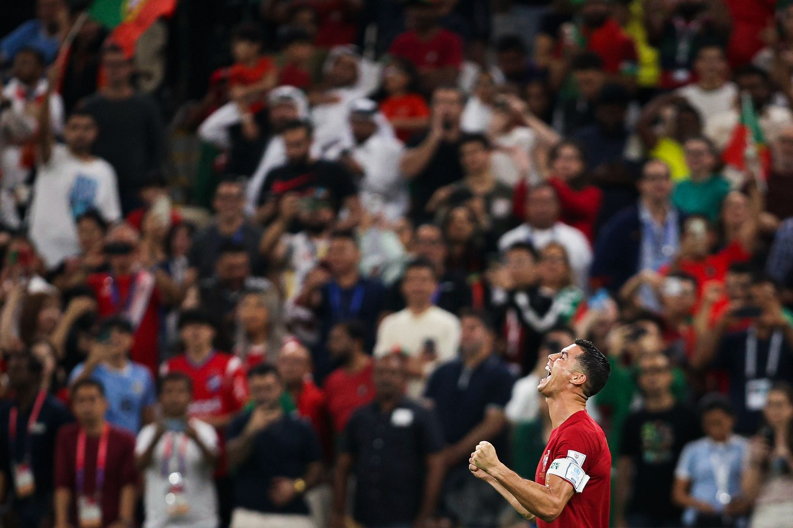

Home
Cristiano Ronaldo
@Cristiano · 3m
Estamos nos oitavos do Mundial! Grande trabalho, equipa! Frente a um adversário de grande mérito, fizemos valer a nossa força e a nossa qualidade. Vamos em frente! Estamos na luta e o nosso sonho continua bem vivo! Força, Portugal! 💪🏽🇵🇹
29.5K
375.4K
Dev.tobs 🇳🇬🇺🇸|MDsc. EMCDsa. CWDSA. CSDA.
@DevTobs · 3h
Don’t allow people’s progress run you on a pressure-pedestal. Your success story is gonna come if you ain’t gonna relent or give up. Folks who share their success stories have gone through nightmares too. Take a Chill. Your time is almost here too. You’re gonna win 🎉
6,324
29.5K
375.4K
Àgbà Akin
@Kynsofficial · Nov 27
Learn a tech skill
Learn a tech skill
Learn a tech skill
Learn a tech skill
Learn a tech skill
Learn a tech skill
Please learn a tech skill, I beg you, I’ve seeing it😭😭😭
6,324
29.5K
375.4K
Sage 🦾
@codingossy · 23m
1 more day till the December challenge. 🙏🏼🙏🏼 Hope the front end developers here already bought gas and cooking ingredients. It's all about having fun, learning new stuff and coding in public. Expect the figma and details by 8am tomorrow ♥️
6,324
29.5K
375.4K
Name cannot be blank
@hackSultan · 23m
Techiesss Assembleeee.
Mark attendance by retweeting this tweet.
End of the months attendance.
What did you learn/build this month? What’s your plan for next month?
6,324